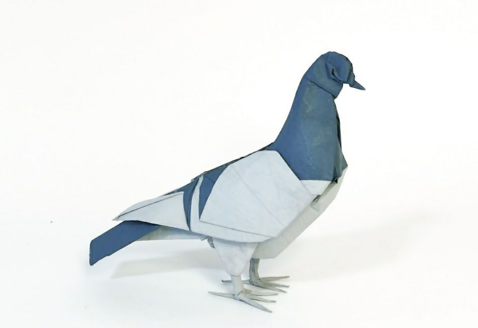
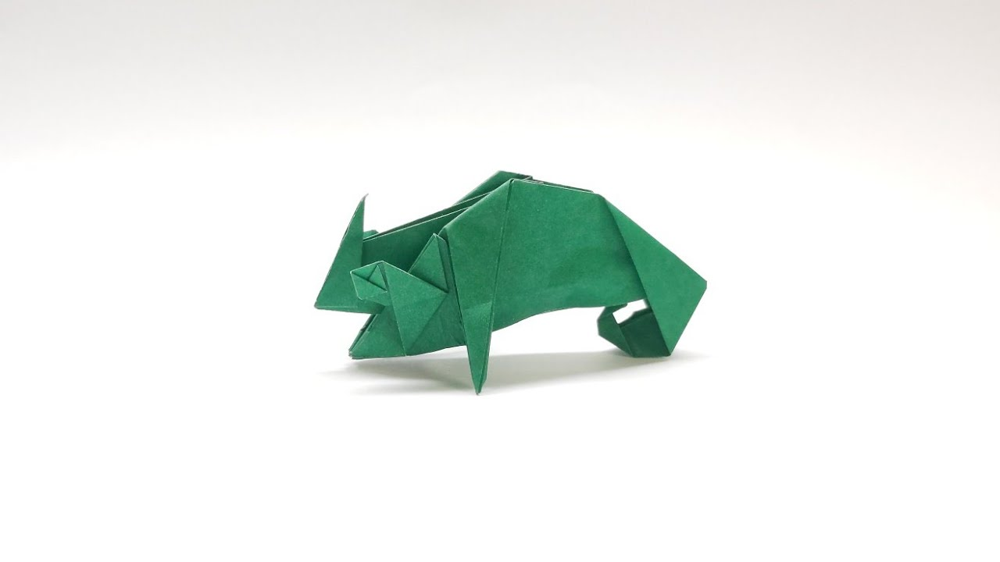
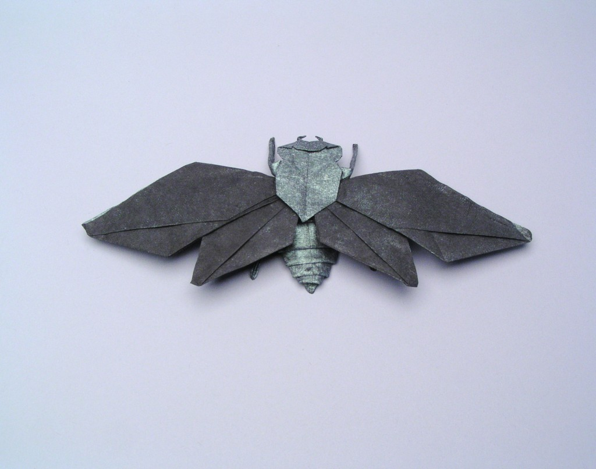

Intersting Facts About Pigeon
- They are incredibly complex and intelligent animals.
- Pigeons are highly sociable animals.
- Pigeons are renowned for their outstanding navigational abilities.
- Both female and male pigeons share responsibility of caring for and raising young.

Intersting Facts About Panda
- They have great camouflage for their environment.
- Their eyes are different to normal bears.
- They spend a lot of their day eating.
- Bamboo is critical to their diet.

Intersting Facts About Camel
- The hump of on the camel's back is a lump of fat.
- Camels have 34 teeth
- Baby camels are born without a hump
- Camels can close their nostrils to prevent sand entering their nose

Facts About A Teddy Bear
- A teddy bear is a stuffed toy in the form of a bear.
- Morris Michtom saw the drawing of Roosevelt and was inspired to create a teddy bear.

Intersting Facts About a Chameleon
- Almost half of all known species live in Madagascar
- Chameleon vary wildly in terms of size
- Skin crystals enable them to change colour at will.

Intersting Facts About Cicada
- Cicadas can survive a huge fall as babies.
- The loud whirring or buzzing sound you hear is an all-male cicada chorus.
- Most have red-orange eyes.